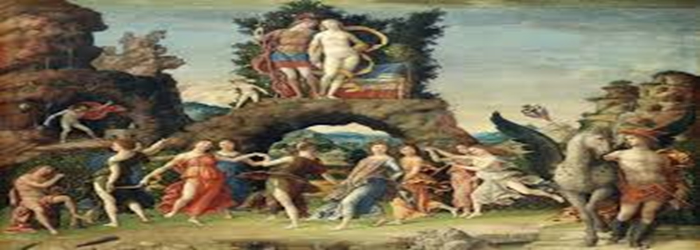

Parnaianismo
 Neste espaço, vocês poderão apreciar manuscritos e edições de obras do Parnaianismo, que refletem a busca pela excelência formal e a inspiração na literatura clássica. Esses autores nos convidam a valorizar não apenas o conteúdo, mas a arte da palavra. Vamos explorar juntos essa rica contribuição à nossa cultura literária!
O Parnasianismo, que ocorreu de 1882 a 1893, valorizava a forma e a estética clássica, em contraste com a liberdade estilística do Romantismo.
A precisão formal e a busca pela perfeição técnica são características desse movimento. Olavo Bilac é um dos poetas mais representativos dessa escola.
Neste espaço, vocês poderão apreciar manuscritos e edições de obras do Parnaianismo, que refletem a busca pela excelência formal e a inspiração na literatura clássica. Esses autores nos convidam a valorizar não apenas o conteúdo, mas a arte da palavra. Vamos explorar juntos essa rica contribuição à nossa cultura literária!
O Parnasianismo, que ocorreu de 1882 a 1893, valorizava a forma e a estética clássica, em contraste com a liberdade estilística do Romantismo.
A precisão formal e a busca pela perfeição técnica são características desse movimento. Olavo Bilac é um dos poetas mais representativos dessa escola.
PRINCIPAIS AUTORES
Olavo Bilac: Conhecido por sua métrica rigorosa e sonoridade, Bilac enfatiza a beleza das palavras e o valor da tradição.
"Alberto de Oliveira: Famoso por sua habilidade em explorar a musicalidade dos versos, Oliveira é um exemplo do requinte formal característico do parnaianismo.
Guilherme de Almeida: Poeta e tradutor, Almeida mistura influências clássicas com temáticas modernas, contribuindo para a evolução do movimento.
PRINCIPAIS OBRAS
"O Livro de Aurélia": Olavo Bilac;
"O Livro de Ouro": Guilherme de Almeida;
"Sonetos": Alberto de Oliveira.
CARACTERÍSTICAS
Valorização da Forma;
Musicalidade;
Tema da Beleza;
Desapego ao Sentimentalismo;
Influência Clássica;
Esteticismo.
